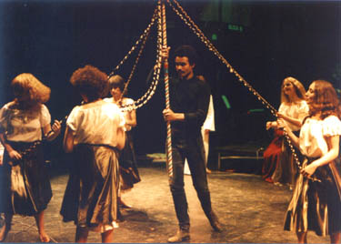
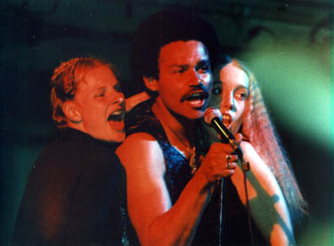
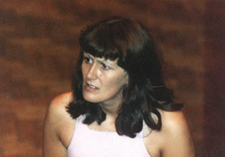

Chapter 12. Stag (version 2)
For quite some considerable time before, during and after Tommy, Chris and I were having a few rethinks with regards to 'Stag'. It had been too long too diffuse and I had been less than happy with the situation that the only harmonies coming from the cast were being done whilst they were moving and/or dancing; not the best of situations. So when the time came to think of a new show to do after the successes of Tommy, we had a new revamped version of Stag for everyone's perusal.

The original version of the Stag script had included several references to Shawtown when the story went back in time to medieval days. To explain this reference a little further, Shawtown had been a district next to Urmston and Flixton which was a market town that disappeared at the time of the industrial revolution, references to it can still be found today in street names. We had originally written (pre Stag) a set of seven songs that were set in Shawtown that all found their way into the first version of the show to emphasise that we had slipped back into time; this was the Shawtown set.
What we had done to the show in the new version was to completely lose all references to the songs, Sunday in Shawtown, Winds of Change, and Easter Fayre, and re-instated all the missing verses of White Rose Queen and The Tall Tree. So the only songs left from the original seven Shawtown songs were:
- The Tall Tree,
- Once There Was A Fair Young Maiden,
- Daisy Chain Morning and
- White Rose Queen.
Chris also tightened up the script in a number of small ways and the show was much better as a result. I had been scoring the show anew with the intention of not having the dancers sing the harmonies required, but to have a chorus of singers with the band at all times, who would just sing! This meant that music like 'The Castle' now had seven part harmonies behind the lead vocal.
So we wanted a dozen or so really good singers... and lots of rehearsals!

My scrapbook shows that by May 1979 we were ensconced in multiple rehearsals at the Two Brewers in Salford (now sadly gone) and we were already advertising in all the papers for chorus singers. We had booked the Oldham Grange Arts Centre again between June 19th and 23rd 1979; so the rush was on! We had also been accepted yet again for the Royal Exchange on July 30th and we were going to do Stag there too, so I was really thrilled that my music was going to be performed at the Royal Exchange!
The rehearsals went very hectically, but after the initial hiatus of everyone in the chorus learning more than two dozen new (to them) songs and singing anything from two to seven part harmonies, it all gelled very nicely.
The band had also been considerably revised and extended and was now a seven piece consisting of myself on guitars (classical and acoustic), renaissance lute, piano, and synths (various), Mike again on Bass, but with new members Colin Touchin on backup keyboards, recorders and glockenspiel, Geoff Morley on Electric and Acoustic Guitars, Vic Hartley on Electric and Acoustic Guitars, Steven Allcock on Tenor and Alto Saxophones, and Brian Marsh on Drums and Percussion.
The main cast were Louis Grant, as Herne, Alison Davis as Sally, Chris Shepherd as John, Mary Clark as Mary, Mike Cheesman as Peter, Frank Boylan as Simeon, Mike Monahan as Maestro and Rosemary Blackshaw and Jeremy Roche as young Sally and Young Peter.

There were ten people in the cast who were Herne's followers played by Amanda Fogg, Shirley Hawley, Alison Holden, Jaqui Johnson, Gareth Jones, Andrew Pastor, Cathy Powell, Mike Shaft, Caroline Timmins, and Maxine Thomas.
The chorus singers, who numbered eleven, were Wendy Bellamy-Wood, Shona Corben, Tim Drake, Dennis Duignan, Rita Machin, Anne Marie Paul, Gerard Sammon, Liam Sammon, Mike Sammon, Ruth Taylor, and Juliet Wood.
The show in its final staging was split into four parts with an interval between parts two and three and consisted of 41 separate musical numbers (not counting the Waltz in D that I had written, which was excerpted a number of times, but never in a complete form, during Sally's visit to Rome with the Maestro).
The end result was a stunning presentation that blew everyone's mind visually and musically. After all the music was Rock, Folk, Blues, Chorus, Classical, Pastiche, all at the same time. It consisted of solo, duets, trios, quartets, quintets, and sextets of singers backed by a seven piece band and an eleven strong chorus at times singing up to seven separate parts! The characters were dressed up in an array of startling costumes, every one of the main characters having numerous costume changes sometimes with very little time to spare for error.
There was also the time-slip nature of the story to consider as well, for it does not run chronologically but back and forth throughout its (now) 2 1/4 hours of staging. Sally has to keep swapping wigs, to underline the fact that time has changed and she is now older or younger. No wonder the story still confused people somewhat. But its power as a staging was undeniable now and it really did find its final form here.
But the most startling of events happened on the final Saturday night...